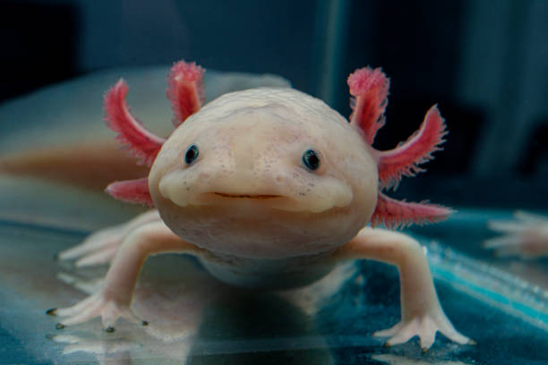

El ajolote es un anfibio originario de México y es famoso por su capacidad para regenerar partes de su cuerpo.
Habita en lagos y canales de agua dulce, especialmente en la zona de Xochimilco en México.
Se alimenta de pequeños peces, insectos y gusanos.